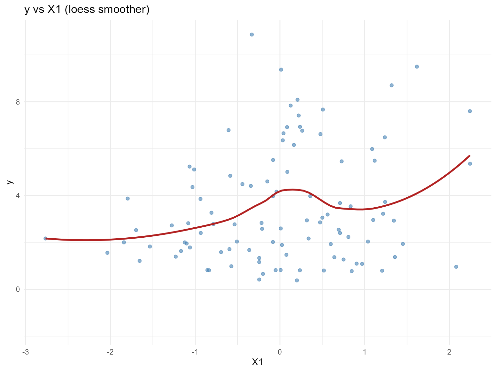
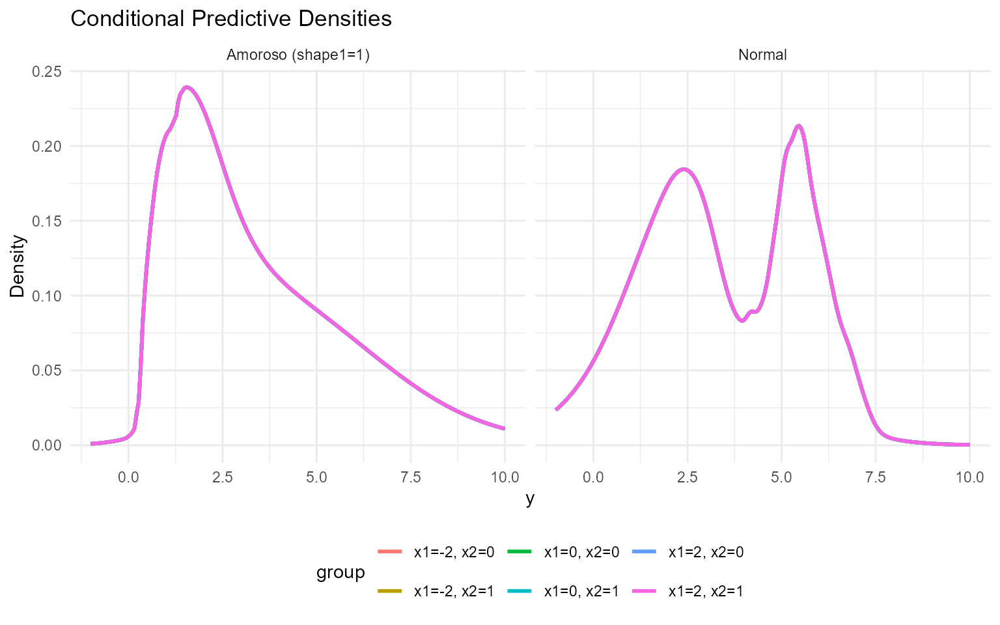
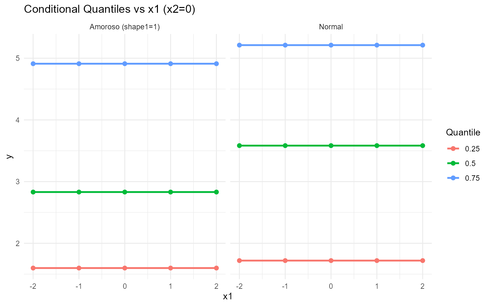
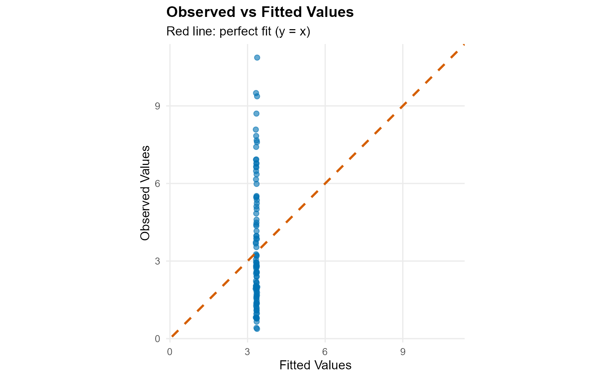
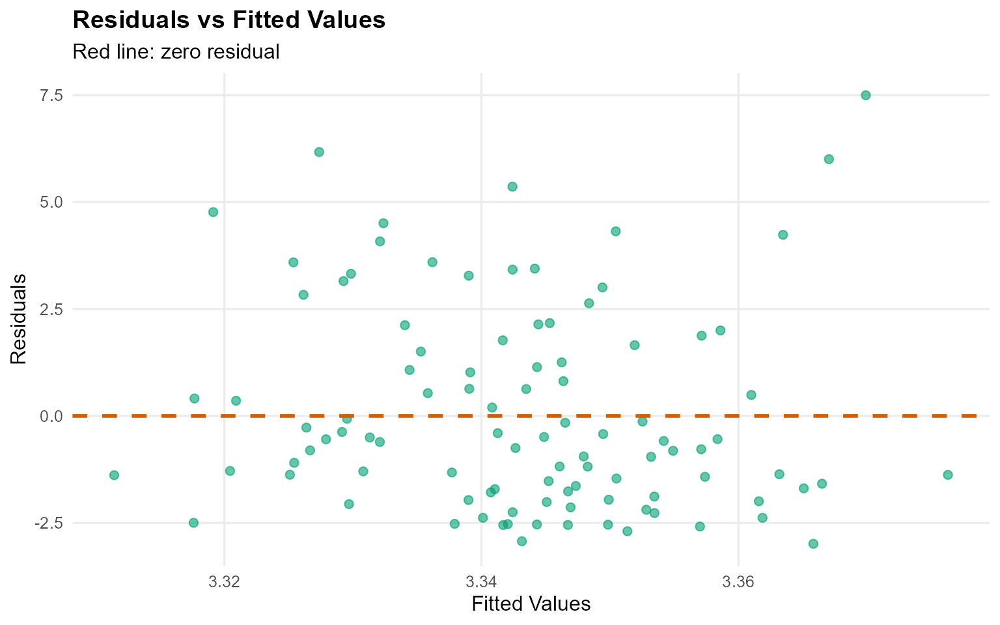
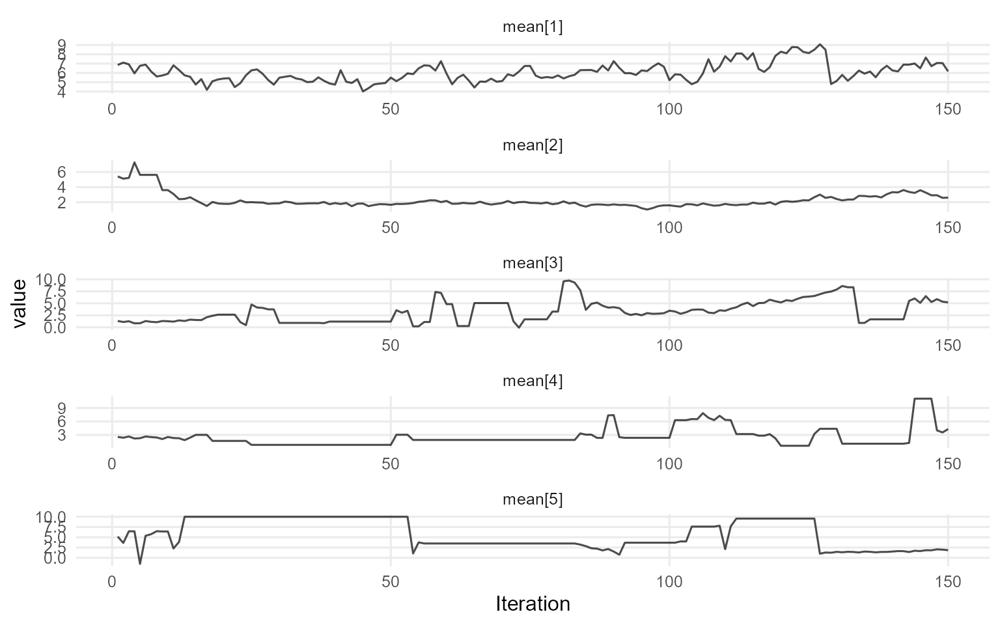
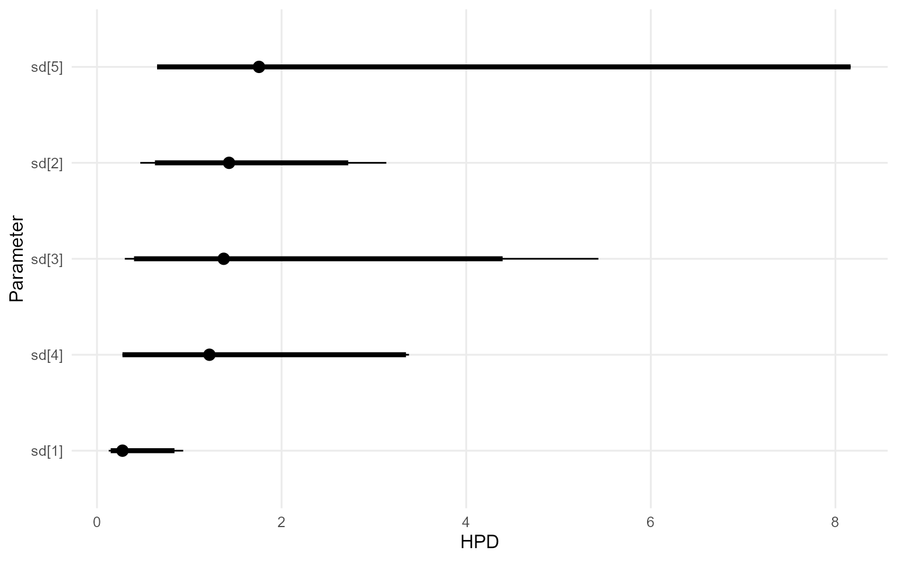
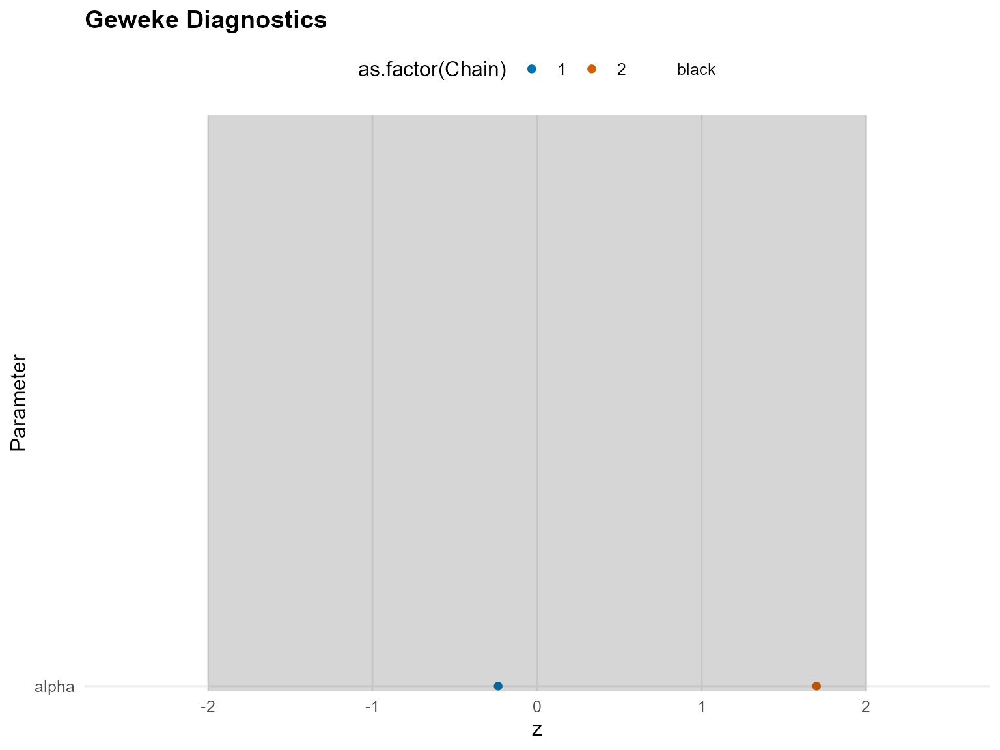
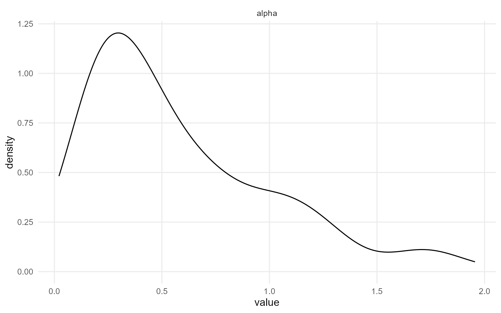

10. Conditional DPmix with CRP Backend
Source:vignettes/legacy/v10-conditional-DPmix-CRP.Rmd
v10-conditional-DPmix-CRP.RmdLegacy vignette (for the website / historical notes). These files may not match the current exported API one-to-one. Last verified: 2026-01-18.
For the up-to-date workflow, see the main package vignettes (Introduction, Model Spec, MCMC Workflow, Unconditional/Conditional/Causal, Backends, S3 Reference).
Theory (brief)
Conditional DP mixtures allow kernel parameters to depend on covariates, giving flexible regression-style distributions. The CRP backend introduces clustering of conditional distributions via allocations.
Conditional DPmix: CRP Backend with Covariates
Purpose: Show how the CRP backend can model
via a covariate-dependent Dirichlet Process mixture. This vignette
parallels v04 but includes
so we can explore conditional predictions.
Data Setup
data("nc_posX100_p3_k2")
y <- nc_posX100_p3_k2$y
X <- as.matrix(nc_posX100_p3_k2$X)
if (is.null(colnames(X))) {
colnames(X) <- paste0("x", seq_len(ncol(X)))
}
summary_tbl <- tibble(
statistic = c("N", "Mean", "SD", "Min", "Max"),
value = c(length(y), mean(y), sd(y), min(y), max(y))
)
df_cov <- data.frame(y = y, x1 = X[, 1], x2 = X[, 2])
p_cov <- ggplot(df_cov, aes(x = x1, y = y)) +
geom_point(alpha = 0.6, color = "steelblue") +
geom_smooth(method = "loess", color = "firebrick", fill = NA) +
labs(title = "y vs X1 (loess smoother)", x = "X1", y = "y") +
theme_minimal()
print(p_cov)
| statistic | value |
|---|---|
| N | 100.000 |
| Mean | 3.454 |
| SD | 2.406 |
| Min | 0.377 |
| Max | 10.870 |
Model Specification & Bundle
bundle_cond_normal <- build_nimble_bundle(
y = y,
X = X,
kernel = "normal",
backend = "crp",
GPD = FALSE,
components = 5,
mcmc = mcmc
)
bundle_cond_amoroso <- build_nimble_bundle(
y = y,
X = X,
kernel = "amoroso",
backend = "crp",
GPD = FALSE,
components = 5,
mcmc = mcmc
)Running MCMC
fit_cond_normal <- load_or_fit("v10-conditional-DPmix-CRP-fit_cond_normal", run_mcmc_bundle_manual(bundle_cond_normal))
fit_cond_amoroso <- load_or_fit("v10-conditional-DPmix-CRP-fit_cond_amoroso", run_mcmc_bundle_manual(bundle_cond_amoroso))
summary(fit_cond_normal)MixGPD summary | backend: Chinese Restaurant Process | kernel: Normal Distribution | GPD tail: FALSE | epsilon: 0.025
n = 100 | components = 5
Summary
Initial components: 5 | Components after truncation: 2
WAIC: 365.588
lppd: -144.375 | pWAIC: 38.418
Summary table
parameter mean sd q0.025 q0.500 q0.975 ess
weights[1] 0.529 0.093 0.357 0.53 0.723 13.352
weights[2] 0.342 0.097 0.167 0.34 0.49 12.52
alpha 0.615 0.36 0.129 0.542 1.359 56.464
mean[1] 2.613 1.359 1.427 1.989 5.785 51.113
mean[2] 4.747 1.916 1.424 5.448 7.147 44.946
sd[1] 1.156 0.7 0.145 1.176 2.451 32.227
sd[2] 0.804 0.804 0.166 0.392 2.919 73.942
summary(fit_cond_amoroso)MixGPD summary | backend: Chinese Restaurant Process | kernel: Amoroso Distribution | GPD tail: FALSE | epsilon: 0.025
n = 100 | components = 5
Summary
Initial components: 5 | Components after truncation: 2
WAIC: 389.837
lppd: -158.014 | pWAIC: 36.905
Summary table
parameter mean sd q0.025 q0.500 q0.975 ess
weights[1] 0.564 0.087 0.4 0.55 0.77 16.431
weights[2] 0.384 0.082 0.192 0.39 0.5 17.039
alpha 0.583 0.43 0.07 0.45 1.717 105.653
loc[1] -0.189 1.298 -2.944 0.258 1.353 4.515
loc[2] 0.245 0.804 -1.962 0.296 1.442 23.745
scale[1] 3.376 1.983 0.748 3.33 6.743 20.236
scale[2] 2.139 1.794 0.548 1.367 6.508 61.186
shape1[1] 1.524 0.451 0.912 1.561 2.467 16.173
shape1[2] 1.687 0.505 0.912 1.633 2.897 18.834
shape2[1] 1.629 0.602 0.855 1.508 2.911 4.29
shape2[2] 1.522 0.533 0.845 1.347 2.93 14.002
params_cond <- params(fit_cond_normal)
params_condPosterior mean parameters
$alpha
[1] "0.615"
$w
[1] "0.529" "0.342"
$mean
[1] "2.613" "4.747"
$sd
[1] "1.156" "0.804"Conditional Predictions
X_new <- expand.grid(
x1 = seq(-2, 2, length.out = 3),
x2 = c(0, 1),
x3 = 0
)
colnames(X_new) <- colnames(X)
y_grid <- seq(-1, 10, length.out = 200)
densities_normal <- lapply(seq_len(nrow(X_new)), function(i) {
pred <- predict(fit_cond_normal, x = as.matrix(X_new[i, , drop = FALSE]), y = y_grid, type = "density")
data.frame(
y = pred$fit$y,
density = pred$fit$density,
group = paste0("x1=", round(X_new[i, "x1"], 1), ", x2=", X_new[i, "x2"]),
model = "Normal"
)
})
densities_amoroso <- lapply(seq_len(nrow(X_new)), function(i) {
pred <- predict(fit_cond_amoroso, x = as.matrix(X_new[i, , drop = FALSE]), y = y_grid, type = "density")
data.frame(
y = pred$fit$y,
density = pred$fit$density,
group = paste0("x1=", round(X_new[i, "x1"], 1), ", x2=", X_new[i, "x2"]),
model = "Amoroso (shape1=1)"
)
})
df_dens <- bind_rows(densities_normal, densities_amoroso)
ggplot(df_dens, aes(x = y, y = density, color = group)) +
geom_line(linewidth = 1) +
facet_wrap(~ model) +
labs(title = "Conditional Predictive Densities", x = "y", y = "Density") +
theme_minimal() +
theme(legend.position = "bottom")
Covariate Effect on Conditional Quantiles
X_grid <- cbind(
x1 = seq(-2, 2, length.out = 5),
x2 = 0,
x3 = 0
)
colnames(X_grid) <- colnames(X)
quant_probs <- c(0.25, 0.5, 0.75)
pred_q_normal <- predict(fit_cond_normal, x = as.matrix(X_grid), type = "quantile", index = quant_probs)
pred_q_amoroso <- predict(fit_cond_amoroso, x = as.matrix(X_grid), type = "quantile", index = quant_probs)
quant_df_normal <- pred_q_normal$fit
quant_df_normal$x1 <- X_grid[quant_df_normal$id, "x1"]
quant_df_normal$model <- "Normal"
quant_df_amoroso <- pred_q_amoroso$fit
quant_df_amoroso$x1 <- X_grid[quant_df_amoroso$id, "x1"]
quant_df_amoroso$model <- "Amoroso (shape1=1)"
bind_rows(quant_df_normal, quant_df_amoroso) %>%
ggplot(aes(x = x1, y = estimate, color = factor(index), group = index)) +
geom_line(linewidth = 1) +
geom_point(size = 2) +
facet_wrap(~ model) +
labs(title = "Conditional Quantiles vs x1 (x2=0)", x = "x1", y = "y", color = "Quantile") +
theme_minimal()
Residuals & Diagnostics


plot(fit_cond_normal, params = "mean", family = "traceplot")
=== traceplot ===
plot(fit_cond_normal, params = "sd", family = "caterpillar")
=== caterpillar ===
plot(fit_cond_amoroso, params = "loc", family = "traceplot")
=== traceplot ===
plot(fit_cond_amoroso, params = "scale", family = "caterpillar")
=== caterpillar ===
Takeaways
- Covariate-informed DP mixtures predict outcome distributions that
shift with
x1(and other covariates). - Use
predict(..., type = "density")to visualize conditional densities andtype = "quantile"for posterior-mean location shifts. - Diagnostics (
plot(fit_cond_normal),fitted(fit_cond_normal)) ensure the chains mix before relying on predictions. - Next vignette extends the same idea to the SB backend before adding tails.